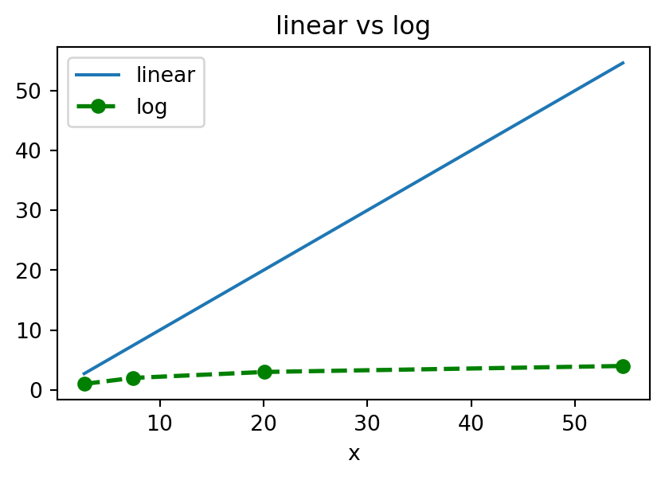

| sepal_length | sepal_width | petal_length | petal_width | species | |
|---|---|---|---|---|---|
| 0 | 5.1 | 3.5 | 1.4 | 0.2 | setosa |
| 1 | 4.9 | 3.0 | 1.4 | 0.2 | setosa |
Introduction to IBIS + DuckDB
Software Carpentry
Oxford Progamme for Sustainable Infrastructure Systems (OPSIS)
16 December 2025
High performance Data analytics
Welcome
This workshpop will present an alternative tool for the data scientists and engineers to work with (very) large data sets with performances that can not be matched by the standard set of tools (pandas + geopandas). Specifically we talk today about SQL and it’s DuckDB dialect, and ibis, a python package helping us interact directly with an SQL backend (a database) and query it with a more familiar python syntax.
Summary
- Introduction
- SQL Overview
- DuckDB
- extension : spatial
- ibis
- Live demo
- Notebook Review
DuckDB vs Pandas
Or more generally, SQL against python(R) based analytics pipelines.
Depends on the use case, lower level kinds of tools tend to be tedious to set up, require adhering to stricter rules and more complex syntax.
Can yield great performance improvements.
Higher level tools will be more user friendly, easy to set up, less performance.
For small to medium data (\(\approx 100 MB\)), the difference will not necessarily be striking, but beyond that, it can be game changing.
Some tools try to bring together the best of both worlds, however require introducing an additional layer of abstraction that can take some time to adapt to. ibis is such a tool.
From the creator of both himself
Apache Arrow and the “10 Things I Hate About pandas
- Memory mapping huge datasets
- High speed data ingest and export (databases and file formats)
- Keeping memory allocations in check
- Query planning, multicore execution
SQL
Glossary
- SQL
- Structured Query Language, has been developped to work on structured tables.
- (R)DBMS
- (Relational) DataBase Management System
- OLAP
- OnLine Analitical Processing, similar term to data engineering, ETL.
- OOM
- Out of Memory, a system making use of the computers disk memory in combination to the RAM.
SQL
- Exisits in open source versions (SQLite, PostgreSQL, DuckDB) and commercial (MongoDB, Oracle …)
- Not a general purpose programming language (unlike python, R, C, C++, Java…)
- Designed for work on data tables
From data file in memory, to table in a database
- Data tables need to be strictly defined through a schema and registered on the database.
For example the commonly used iris data set.
| type | |
|---|---|
| petal_length | float64 |
| petal_width | float64 |
| sepal_length | float64 |
| sepal_width | float64 |
| species | string |
SQL
General templates for SQL expresssions:
Selecting, grouping, aggregating
Joining two tables
Variants
CASES
IN
Just a couple examples for reference, a lot more in the docs.
SQL
Many useful functionalities are provided with base SQL,
View
Imagine having an SQL experession, that takes an existing table and does some operations on it. Maybe this table itself is not necessarily the end goal of your analysis, it serves an intermediate purpose. Because of that, you might not want to save it in your database, you would rather want something temporary that you can call when you need, but otherwise it would not occupy extra space. In such cases, it is common to use views. They allow saving an unrealised query. And when you actually need the data from it, you call the view and manipulate it just like a table.
This will be important to better understand what is going on later on.
SQL
Index
An important feature of databases, that really differentiates them as the best tool around for manipulating data, is indices. Indices find their root in quite fundamental computer science concepts and are closely related to dimensionality reduction, information representation, optimisation. The topic is vast. An index implements an ordering into data allowing much faster querying and ultimately much faster results.
The Cambridge dictionary has around \(N = 140,000\) words. Imagine how challenging it would be to find a definition if it was completely unordered. This is what we do generally with our data… The complexity of the operation would be of the order of the number of entries \(N \approx 10^5\). Dictionaries are indexed alphabetically, making a search operation for a word of the order \(ln(N) \approx 12\).
They are defined other columns or sets of columns and implement an ordering. The algorithm depends on the type of the column, such as strings, numericals or geometries. The topic of indexing and optimisation could deserve a workshop of it’s own and is a whole field in computer science, with many algorithms remaining sub-optimal.
In practice, some software packages such as DuckDB will build indices by default, giving close to optimal performance out of the box.

DuckDB
DuckDB
A dialect of SQL, it is pretty much the same with some little extras that are meant to expand or facilitate cetain functionalities that traditional SQL does no have. It has been developped by a dutch team and has received great recognition lately for it’s usability, performance, light weight and fast evolving community and extensions, including the spatial one.
It’s hard to set up tables in a SQL database, for example Postgres… You need to stick to a strict, pre-defined schema, the type of tools needed may vary depending on the input (csv, parquet, geospatial). Often, you need a separate command line tool to run the process. It tends to be a pain…
In DuckDB, reading almost any file looks like that:
DESCRIBE SELECT * FROM 'myfile.parquet';
SELECT * FROM 'folder_with_files/*.parquet'; -- uses read_parquet
SELECT * FROM 'myfile.csv'; -- uses read_csv
SELECT * FROM 'myfile.shp'; -- uses st_read from the spatial extension
-- And another great feature:
SELECT * FROM "website.com/cool_online_data.parquet"thanks to a feature called replacement scans.
Multi Threading
Another great feature of DuckDB is the use of parallel processing out of the box.
Useful links SQL
- https://www.w3schools.com/sql/sql_intro.asp
- https://www.geeksforgeeks.org/sql/what-is-sql/
- https://duckdb.org/docs/stable/sql/introduction
- https://duckdb.org/docs/stable/data/overview
And of course ask chatGPT, it’s quite good at that
Connecting python to DuckDB
Calling a DB engine from python
There are other existing ways to run code on an SQL database from a python script, but it usuallly looks like that:
Connection
Query
Run and get some results in python.
┏━━━━━━━━━━━━━━┳━━━━━━━━━━━━━┳━━━━━━━━━━━━━━┳━━━━━━━━━━━━━┳━━━━━━━━━━━━┓ ┃ sepal_length ┃ sepal_width ┃ petal_length ┃ petal_width ┃ species ┃ ┡━━━━━━━━━━━━━━╇━━━━━━━━━━━━━╇━━━━━━━━━━━━━━╇━━━━━━━━━━━━━╇━━━━━━━━━━━━┩ │ float64 │ float64 │ float64 │ float64 │ string │ ├──────────────┼─────────────┼──────────────┼─────────────┼────────────┤ │ 5.1 │ 3.3 │ 1.7 │ 0.5 │ setosa │ │ 5.0 │ 3.5 │ 1.6 │ 0.6 │ setosa │ │ 7.0 │ 3.2 │ 4.7 │ 1.4 │ versicolor │ └──────────────┴─────────────┴──────────────┴─────────────┴────────────┘
We are writing SQL queries as python strings and then sending them other to the backend through a .sql method of the client connection object conn. Using various string methods, this already gives us some nice possibilities, such as fstring for a parameter. And as you will see, there are times when this is our best solution.
But for most cases, we can do better than that.
ibis
ibis is the link between powerfull backend infrastructure and user friendly python functions and workflows. It allows writing code in a simpler and more familiar similar syntax to pandas, heavily inspired by the tidyverse and dplyr analisys flows in R1.
What if instead we could have a more familiar syntax, more adapted to our python workflow, such as pandas, that would be translated into SQL, then possibly optimised and finally executed in the database ?
Say no more !
With ibis, our previous query is written as
┏━━━━━━━━━━━━━━┳━━━━━━━━━━━━━┳━━━━━━━━━━━━━━┳━━━━━━━━━━━━━┳━━━━━━━━━━━━┓ ┃ sepal_length ┃ sepal_width ┃ petal_length ┃ petal_width ┃ species ┃ ┡━━━━━━━━━━━━━━╇━━━━━━━━━━━━━╇━━━━━━━━━━━━━━╇━━━━━━━━━━━━━╇━━━━━━━━━━━━┩ │ float64 │ float64 │ float64 │ float64 │ string │ ├──────────────┼─────────────┼──────────────┼─────────────┼────────────┤ │ 5.1 │ 3.3 │ 1.7 │ 0.5 │ setosa │ │ 5.0 │ 3.5 │ 1.6 │ 0.6 │ setosa │ │ 7.0 │ 3.2 │ 4.7 │ 1.4 │ versicolor │ └──────────────┴─────────────┴──────────────┴─────────────┴────────────┘
Notice the _ object, it is imported from ibis and replaces the table in this context. It’s a handy way around having to write the table name every time.
Pandas
Looking behind the curtain
Ibis handily provides us with a function to visualise the SQL expression that is created in the background from our python code. This can be seen as a view that ibis writes for us. It is only executed when we need it, and only as much from it as we need.
The python variable expr that we created, represents an unrealised SQL expression on the backend side. Is lazilly evaluated when needed. For example, calling the head(3) method will only compute the requested first 3 rows. Instead of going through the whole table before returning only 3 elements. It’s an object very close to an SQL view, that we saw earlier.
Extensions
More here: - Official: https://duckdb.org/docs/stable/core_extensions/overview - Community: https://duckdb.org/community_extensions/
Notable
Spatial
For working with spatial data.
Docs: https://github.com/duckdb/duckdb-spatial Blog: https://motherduck.com/blog/geospatial-for-beginner-duckdb-spatial-motherduck/
QuackOSM
For Reading raw OSM buffer files directly into a duckdb database with a convenient data schema.
https://github.com/kraina-ai/quackosm
H3
Extension for the UBER H3 API to work with spatial data.
- https://github.com/isaacbrodsky/h3-duckdb
Scalenav
A package I developed as part of my work in OPSIS to build global geospatial analysis pipelines with H3, spatial, duckdb and ibis. I am regularly expanding the functionalities there.
- https://github.com/nismod/scale-nav
Performance & More
- https://github.com/prrao87/duckdb-study
- https://www.kdnuggets.com/we-benchmarked-duckdb-sqlite-and-pandas-on-1m-rows-heres-what-happened
- https://motherduck.com/blog/duckdb-versus-pandas-versus-polars/
- https://www.codecentric.de/en/knowledge-hub/blog/duckdb-vs-dataframe-libraries
- https://pipeline2insights.substack.com/p/pandas-vs-polars-vs-duckdb-vs-pyspark-benchmarking-real-experiments
DOCS
SQL
PostgreSQL : https://www.postgresql.org/docs/current/queries-table-expressions.html
DuckDB
- https://duckdb.org/docs/stable/
- Hands on DuckDB book
ibis
The ibis documentation is not very advanced at this point, but some blog posts have been helpfull, understanding SQL, and of course just trying things.
- https://ibis-project.org/posts

Getting started with IBIS + DuckDB